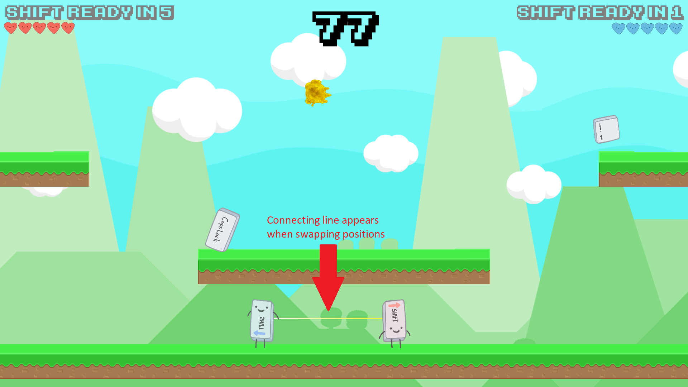

Sticky Keys is a simple 2-player game made during Gamecraft! 2017, an annual 24-hour game-jam competition hosted by the National University of Singapore (NUS) Students’ Games Development Group.
Programmer, mainly responsible for features such as:
December 8, 2017 - December 9, 2017
Koh Lewis
Stanley Tay
Fong Wei Zheng
Lim Yan Hui, Victoria
Alex Ang
Unity
Github
Photoshop
Sticky Keys has a high amount of twitch gameplay, which is gameplay revolving around a fast response time from the player. The player will need to pay close attention to things happening in the game, to be able to quickly react to the events. As such, it is important for the player to be warmed up for the game. We try to achieve this by making sure that there are always moving pieces on the game screen. Our game has two different screens, the title screen and the playing screen. On the title screen, the characters in the game are jumping around. This gets players used to the characters they will be controlling. On the playing screen, the background scrolls by quickly. This draws the player towards the pacing of the game, which allow them to more easily react to the changing elements our game will put the players though.
Sticky Keys was created to be played within a short time frame. As such, it was important that players were able to jump into the game with minimal amounts of prior knowledge, and to be able to understand elements of the game as quick as possible. As such, the user interface needed to explain anything which the user might need to know, in a way which would be easy to understand on its own. There are two main elements I would like to highlight: The lifepoints and shift power.
The lifepoints are colour-coded in the player's colour. This helps the player to know instantly which life indicator is their own. Each lifepoint indicator is split into 5 separate pieces, which tell the player that they can lose life 5 times before they run out.
The shift power is a power which each player has. They can use this power to change position with the opponent, and is an important part of the game. Each power has a cooldown timer before they are allowed to use the power, preventing them from using the power consecutively. As such, it is important that the players know when their powers are available and when they are not. The interface clearly shows this, by greying out the indicator when it is not available and drawing attention to it when it is. Talking more about the powerup, it is very disruptive for both players, since they swap positions on the map. As such, when used, there is a bright yellow line connecting the players to their new position, so that they have an easy link to follow when it occurs.